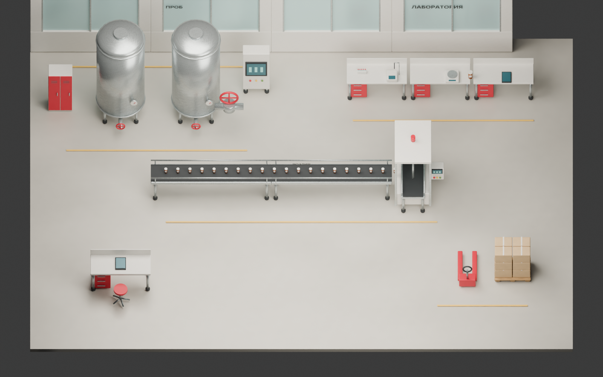
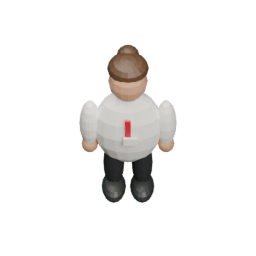

ОЧАКОВО · ГЕЙМПЛЕЙ ДЛЯ UNITY
Быстро между станциями.
Внимательно у прибора.
Химик-лаборант: прогулка по заводу, перенос пробы и головоломки на оборудовании.
Интерактивный макет управления и экранов. Unity-сцена остаётся пустой. Данные заданий учебные.


ХЛ
Химик-лаборант
04:00
Смена на паузе
Можно спокойно осмотреть завод.
Как сочетаются два темпа
В цехе выбираем маршрут, переносим одну пробу и следим за готовностью анализа. У прибора камера приближается: там нужно прочитать данные и настроить оборудование. Пока измерение идёт, можно заняться весами. Результат нужно забрать и лично передать коллеге.
На компьютере — клик по полу или WASD. На сенсорном экране — касание либо небольшой джойстик. Клик по станции ставит маршрут; приближённый экран открывается после подхода. В Unity это будет перемещение по NavMesh и переключение камеры. Этот HTML проверяет логику взаимодействий; он не заменяет реализацию в Unity.
Управление, ограничения и проверка · Спецификация для Unity. Основной макет 16:10 рассчитан на большой экран. Для телефона предусмотрено управление; читаемость и Unity WebGL на реальных устройствах ещё не проверены.